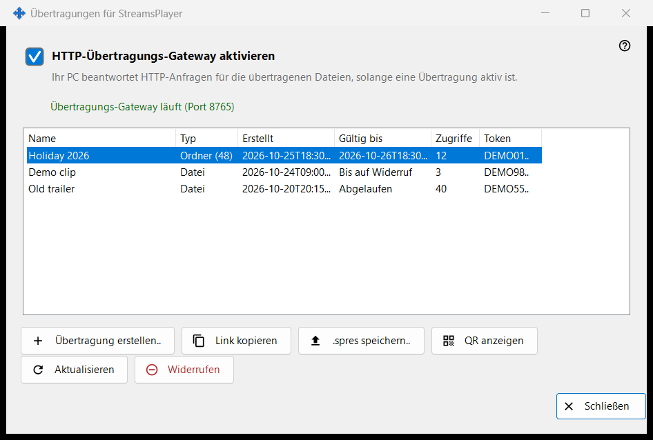
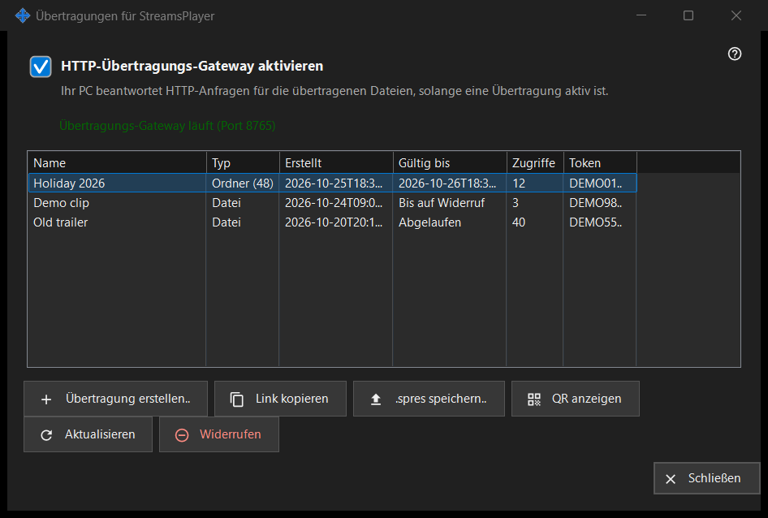

Übertragungen für StreamsPlayer
Verwendungszweck
Verwaltet die HTTP-Übertragungen von Mediendateien und Ordnern, die dieser PC der App StreamsPlayer anbietet. Das Fenster öffnet sich über die Schaltfläche «Übertragungen..» oder den Menüeintrag zum Hinzufügen im Hauptfenster von Share Manager; beide erscheinen nur, wenn der Freigabedienst Übertragungen unterstützt. Ein Start mit einem Pfad öffnet das Fenster und führt direkt zum Dialog «Übertragung erstellen» für diesen Pfad.


In dieser Reihenfolge
- Haken Sie «HTTP-Übertragungs-Gateway aktivieren» an oder erstellen Sie einfach eine Übertragung, wodurch das Gateway eingeschaltet wird.
- Klicken Sie auf «Übertragung erstellen..», wählen Sie die Mediendatei, legen Sie Titel, Gültigkeitsdauer und die Internet-Option fest und klicken Sie auf «Übertragen».
- Der Link wird in die Zwischenablage kopiert.
- Wählen Sie eine Zeile und nutzen Sie «Link kopieren», «.spres speichern..» oder «QR anzeigen», um die Übertragung an ein Gerät weiterzugeben.
- Mit «Widerrufen» heben Sie eine Übertragung auf, wenn sie nicht mehr gebraucht wird.
Die Elemente
Gateway-Schalter
Das Kontrollkästchen schaltet das HTTP-Gateway ein oder aus. Die Zeile darunter lautet «Übertragungs-Gateway ist aus» oder «Übertragungs-Gateway läuft (Port N)». Solange das Gateway läuft, beantwortet dieser PC HTTP-Anfragen für die Übertragungsdateien. Kann das Gateway nicht starten (Port, Firewall), kehrt das Kontrollkästchen in seinen tatsächlichen Zustand zurück, und der Grund erscheint in einer roten Zeile darunter; eine Ablehnung öffnet nie einen Dialog.
Übertragungsliste
Spalten: Name, Typ (Datei oder Ordner mit der Anzahl seiner Elemente), Erstellt, Gültig bis (ein Datum, «Bis auf Widerruf» oder «Abgelaufen»), Zugriffe und Token, das nur die ersten sechs Zeichen zeigt. Die Liste liest sich alle 5 Sekunden selbst neu ein. Ein Doppelklick auf eine Zeile kopiert ihren Link.
Übertragung erstellen..
Fragt nach einer Mediendatei und öffnet den Dialog «Übertragung erstellen». Nachdem Sie ihn bestätigt haben, wird das Gateway bei Bedarf eingeschaltet, die Übertragung erstellt und ihr Link mit Datenschutzmarkierungen in die Zwischenablage kopiert; eine Meldung bestätigt das Kopieren.
Aktualisieren und Widerrufen
«Aktualisieren» ist nur für eine Ordnerübertragung verfügbar und bittet den Dienst, sie zu aktualisieren; eine Meldung bestätigt das. «Widerrufen» funktioniert bei jeder Zeile und fragt vorher: «Übertragung X widerrufen? Der Link funktioniert sofort nicht mehr.» Eine widerrufene Übertragung lässt sich nicht wiederherstellen; erstellen Sie eine neue.
Wenn die Seite aus ist
Antwortet der Freigabedienst nicht oder fehlt ihm die Unterstützung für Übertragungen, schaltet sich die Seite an Ort und Stelle selbst aus, und die rote Zeile nennt den Grund, zum Beispiel dass diese Version des Übertragungsdienstes veraltet ist oder dass die Aktion nicht abgeschlossen werden konnte, mit Details im Protokoll.
Managereinstellungen · SFTP-Freigabeeinstellungen · Einstellungen des Austauschservers